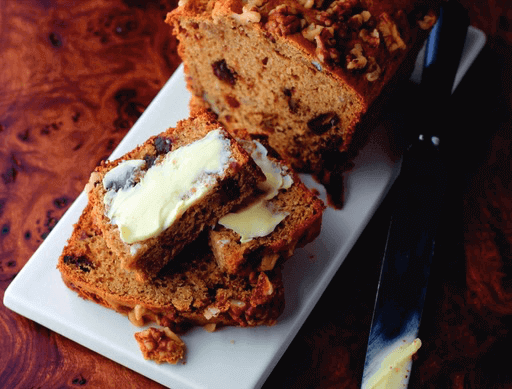

<!DOCTYPE html>
    <html lang="en"></html>
        <head>
                <meta charset="utf-8">
                <title>Recipes | Banana Rum & Walnut Tea Cake</title>
                <link rel="stylesheet" href="../style.css">
        </head>

        <body>
            <h1>Banana Rum & Walnut Tea Cake</h1>
            

            <h2>Ingredients</h2>
                <ul>
                    <li><strong>150g </strong>stoned dates (roughly chopped)</li>
                    <li><strong>1 tsp </strong>bicarbonate of soda</li>
                    <li><strong>2 </strong>medium bananas (approx 150g mashed</li>
                    <li><strong>1 tbsp </strong>dark rum</li>
                    <li><strong>85g </strong>70% fat buttery baking spread</li>
                    <li><strong>55g </strong>dark brown soft sugar</li>
                    <li><strong>170g </strong>condensed milk</li>
                    <li><strong>2 </strong>large beaten eggs</li>
                    <li><strong>225g </strong>self raising flour</li>
                    <li><strong>1 tbsp </strong>baking powder</li>
                    <li><strong>115g </strong>walnut pieces</li>
                    <li>lemon grated & zest</li>
                </ul>

            <h2>Method</h2>
                <ol>
                        <li><h3>Step 1</h3></li>
                        Preheat the oven to 170ºC, (150°C for fan ovens) Gas Mark 3. Place the dates in a small bowl along with the lemon zest and juice, bicarbonate of soda and 2 tbsp boiling water. Stir well and leave to cool, then add the bananas and rum.
                        <li><h3>Step 2</h3></li>
                        In a large bowl, whisk together the baking spread, sugar and condensed milk until smooth. Gradually mix in the eggs, then the banana, rum and date mixture. Sift over the flour and baking powder and then mix in. Reserve a small handful of the walnuts and stir the remainder into the cake mixture.
                        <p><em>For a nuttier taste, toast the walnuts before adding them to the mixture.</em></p>
                        <li><h3>Step 3</h3></li>
                        Transfer the cake mix to the prepared tin, sprinkle over the reserved walnuts and bake for about 1 hour 15 minutes or until a skewer comes out clean when inserted into the middle of the cake.
                        <li><h3>Step 4</h3></li>
                        Leave in the tin to cool for about 15 minutes, then turn out onto a wire rack. Delicious spread with butter or buttery spread.
                        <p><em>When it comes to cutting the loaf, a good trick is to let it sit for a few hours or, if you have enough patience, even wait until the next day. This way the loaf won't crumble and the slices will be in perfect shape to be served next to a hot cup of tea.</em></p>

                </ol>

            <h1><a href="../index.html">Recipes</a></h1>
            <ul>
                <li><a href="./baileys-cheesecake.html">Bailey's Cheesecake</a></li>
                <li><a href="./banana-rum-tea-cake.html">Banana Rum & Walnut Tea Cake</a></li>
                <li><a href="./battenberg-cake.html">Battenberg Cake</a></li>
                <li><a href="./cheese-scones.html">Cheese Scones</a></li>
                <li><a href="./chocolate-baileys-cake.html">Chocolate Bailey's Cake</li>
                <li><a href="./coconut-macaroons.html">Coconut macaroons</li>
                <li><a href="./lemon-tart.html">Lemon Tart</a></li>
                <li><a href="./peaches-cheesecake-bar.html">Peaches & Cream Cheesecake Bars</a></li>
                <li><a href="./strawberry-cheesecake-loaf.html">Strawberry Cheesecake</a></li>
                <li><a href="./recipes/sweet-scones.html">Sweet Scones</a></li>  
                <li><a href="./recipes/vegan-katsu-curry.html">Vegan Katsu Curry</a></li>  
            </ul>
        </body>